<style>body{margin:0;background:#d6e0ea;font:14px Arial;display:grid;grid-template-columns:repeat(4,1fr);gap:8px;padding:8px}figure{margin:0;background:white;padding:8px;height:315px;box-sizing:border-box}img{width:100%;height:270px;object-fit:contain}figcaption{height:25px}</style><figure>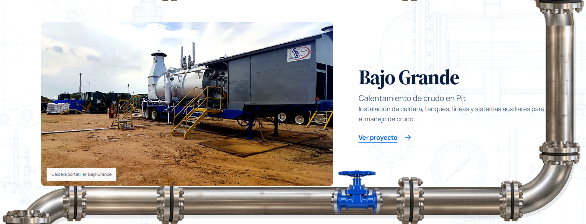<figcaption>proyectos 4 · Bajo Grande</figcaption></figure><figure>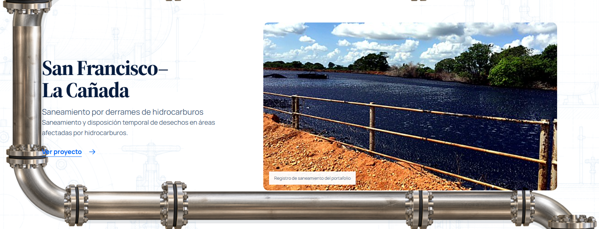<figcaption>proyectos 5 · San Francisco–La Cañada</figcaption></figure><figure>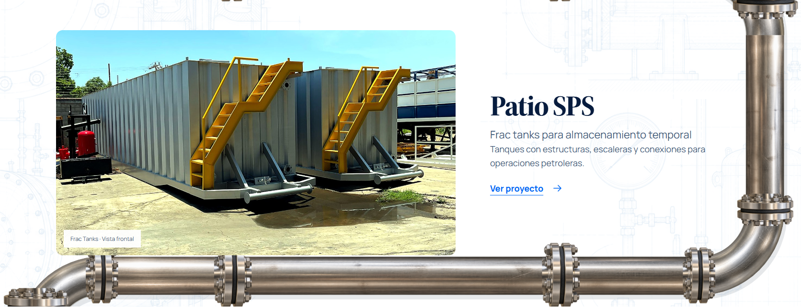<figcaption>proyectos 6 · Patio SPS</figcaption></figure><figure>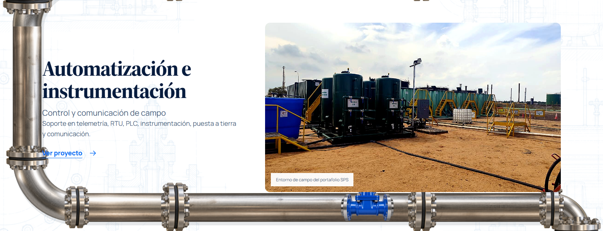<figcaption>proyectos 7 · Automatización e instrumentación</figcaption></figure><figure>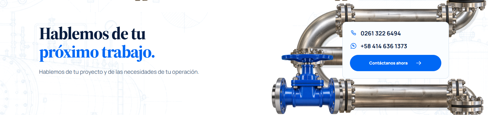<figcaption>proyectos 8 · Hablemos de tupróximo trabajo.</figcaption></figure><figure>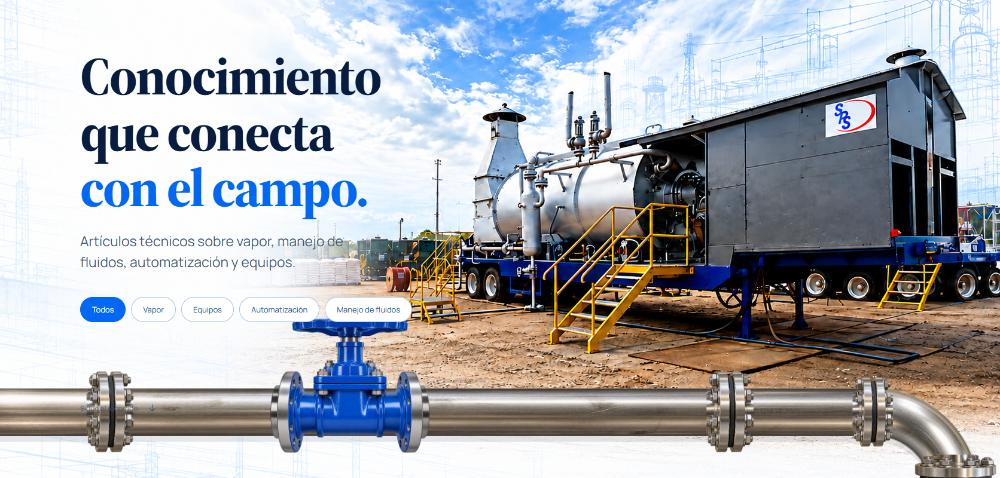<figcaption>articulos 1 · Conocimientoque conectacon el campo.</figcaption></figure><figure>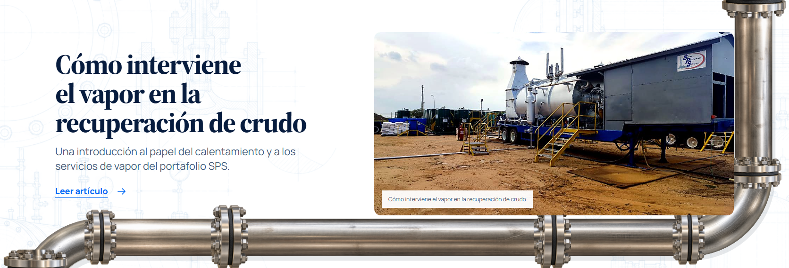<figcaption>articulos 2 · Cómo interviene el vapor en la recuperac</figcaption></figure><figure>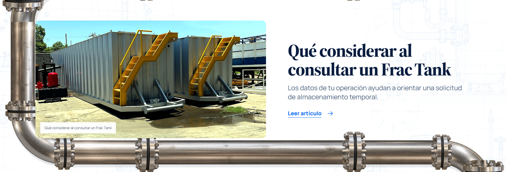<figcaption>articulos 3 · Qué considerar al consultar un Frac Tank</figcaption></figure><figure>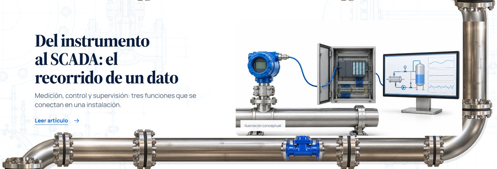<figcaption>articulos 4 · Del instrumento al SCADA: el recorrido d</figcaption></figure><figure>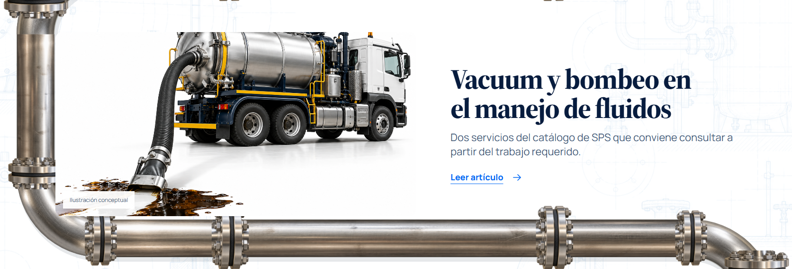<figcaption>articulos 5 · Vacuum y bombeo en el manejo de fluidos</figcaption></figure><figure>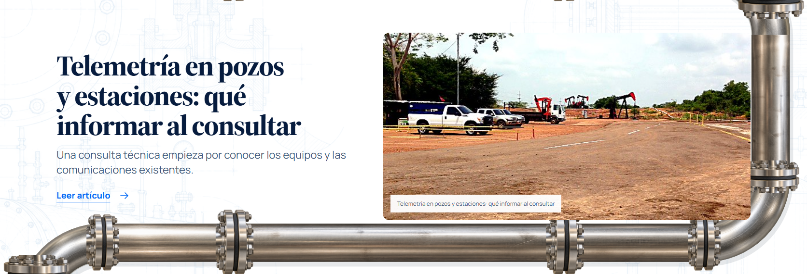<figcaption>articulos 6 · Telemetría en pozos y estaciones: qué in</figcaption></figure><figure>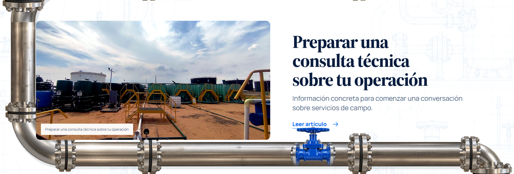<figcaption>articulos 7 · Preparar una consulta técnica sobre tu o</figcaption></figure>